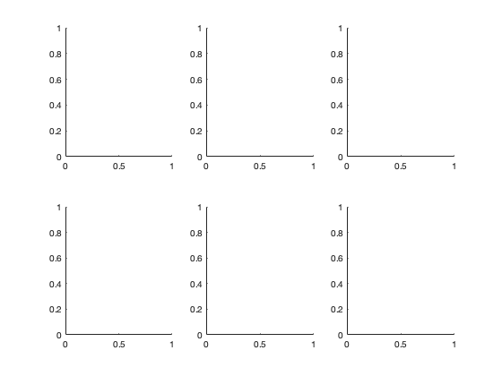
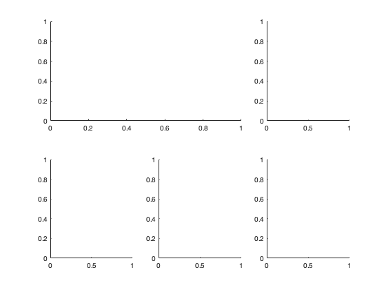
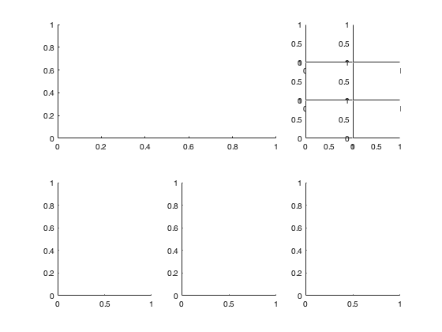
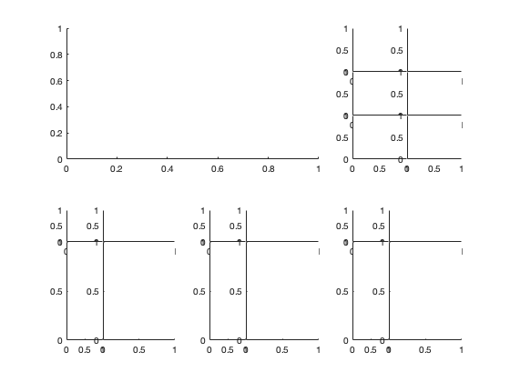

mergeaxes.m and subgridaxes.m: Axis merge/split tools
Author: Kelly Kearney
This repository includes the code for the mergeaxes.m and subgridaxes.m Matlab functions. These are simple tools to create new axes based on the position of existing axes.
Contents
Getting started
Prerequisites
This code should run in any version of Matlab.
Downloading and installation
This code can be downloaded from Github
Matlab Search Path
The following folders need to be added to your Matlab Search path (via addpath, pathtool, etc.):
mergeaxes-pkg/mergeaxes
Syntax
newax = mergeaxes(ax)
newax = subgridaxes(ax, nr, nc) newax = subgridaxes(ax, rfrac, cfrac)
Description
newax = mergeaxes(ax) creates a new axis newax that occupies the bounding box of the existing array of axes ax; the ax axes will be deleted.
newax = subgridaxes(ax, nr, nc) creates a grid of identically-sized axes with nr rows and nc columns occupying the space where ax was; the ax axis will be deleted. ax can be a single axis or an array of axes. The new axes handles are saved to the array newax with dimensions nr x nc x size(ax); the first 2 dimensions of this array correspond visually to the locations of the newly-created axes (i.e., newax(1,1,:) points to the upper left axis), while the trailing dimensions preserve the size of the input array of axis handles.
newax = subgridaxes(ax, rfrac, cfrac) creates a grid of axes dividing the ax position into rfrac fractions vertically (bottom to top) and cfrac fractions horizontally (left to right). Values in the rfrac and cfrac vectors will be normalized to sum to 1 (e.g., rfrac = [0.25 0.5 0.25] and rfrac = [1 2 1] will have the same behavior).
Examples
We start with a grid of traditional axes.
for ii = 1:6 ax(ii) = subplot(2,3,ii); end
Use mergeaxes to merge the first two axes:
mergedax = mergeaxes(ax(1:2))
mergedax =
Axes with properties:
XLim: [0 1]
YLim: [0 1]
XScale: 'linear'
YScale: 'linear'
GridLineStyle: '-'
Position: [0.13 0.58384 0.4942 0.34116]
Units: 'normalized'
Use GET to show all properties
 Divide the third axis into an evenly-sized 3x2 grid:
subax3x3 = subgridaxes(ax(3), 3, 2)
subax3x3 =
3×2 Axes array:
Axes Axes
Axes Axes
Axes Axes
 Divide the remaining axes into uneven 2x2 grids:
subax2x2 = subgridaxes(ax(4:6), [0.75 0.25], [1 2])
subax2x2 = 2×2×1×3 Axes array.
Contributions
Community contributions to this package are welcome!
To report bugs, please submit an issue on GitHub and include:
- your operating system
- your version of Matlab and all relevant toolboxes (type ver at the Matlab command line to get this info)
- code/data to reproduce the error or buggy behavior, and the full text of any error messages received
Please also feel free to submit enhancement requests, or to send pull requests (via GitHub) for bug fixes or new features.
I do monitor the MatlabCentral FileExchange entry for any issues raised in the comments, but would prefer to track issues on GitHub.